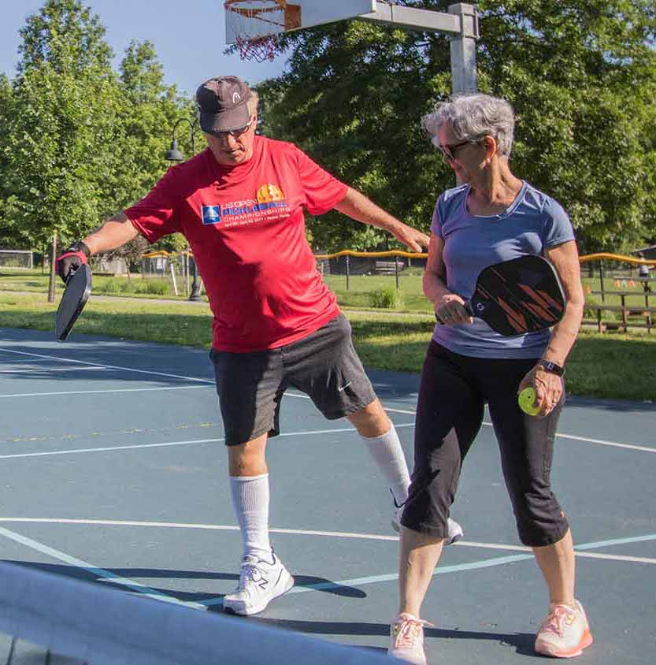

DC Pickleball League
Upcoming DCPL events
Follow the links for more information or to register for each event. Email us at wdcpickleball@gmail.com with any questions.
- Mar. 19 - Apr. 23, Wednesday Outdoor Social League at Rock Creek, 6 weeks, 5:30-7:15pm.
- Mar. 19 - Apr. 23, Wednesday Outdoor Competitive League at Rock Creek, 6 weeks, 7:15-10:00pm.
- Mar. 22 - May 3, Saturday Indoor Ladder Leagues at Rock Creek, 6 weeks (no Apr.5), 4:20-7:00pm.
- Mar. 31 - May 5, Monday Outdoor Social League at Rock Creek, 6 weeks, 5:30-7:15pm.
- Mar. 31 - May 5, Monday Outdoor Competitive League at Rock Creek, 6 weeks, 7:15-10:00pm.
- Apr. 19, Saturday Indoor Clinics for Beginners & Advanced Beginners at Rock Creek, 2:00pm-3:45pm.
- Apr. 19, Saturday Night Indoor Open Play at Rock Creek, 7:00-10:00pm.
- Apr. 20, Sunday Outdoor Clinics for Beginners & Adv. Beginners at Rock Creek, 9:30-11:30am.
- Apr. 20, Sunday Outdoor Open Play at Rock Creek, 9:00am-11:45am.
Current 2025 Ladder League Standings
Ladder standings are updated approximately 72 hours after each day's play. Last updated April 13.- Monday Social League (5:30pm) Ladder
- Monday Competitive League (7:15pm) Ladder
- Wednesday Social League (5:30pm) Ladder
- Wednesday Competitive League (7:15pm) Ladder
- Saturday Social/Competitive League (4:20pm) Ladder
February/March 2025 Ladder League Standings
- Monday Social League (5:30pm) Ladder
- Monday Competitive League (7:15pm) Ladder
- Friday Indoor League (7:00pm) Ladder
- Saturday Social/Competitive League (4:20pm) Ladder
January 2025 Ladder League Standings
- Monday Social League (5:30pm) Ladder
- Monday Competitive League (7:15pm) Ladder
- Friday Indoor League (7:00pm) Ladder
- Saturday Social/Competitive League (4:20pm) Ladder
Previous Ladder League Standings
- December 2024 Ladder League Standings
- Autumn 2024 (Oct/Nov) Ladder League Standings
- Autumn 2024 (Sept) Ladder League Standings
- Summer 2024 (July/Aug) Ladder League Standings
- Summer 2024 (June/July) Ladder League Standings
- Spring 2024 (May/June) Ladder League Standings
- Spring 2024 (Mar/Apr) Ladder League Standings
- Winter 2024 (Feb/Mar) Ladder League Standings
- Winter 2024 (Jan/Feb) Ladder League Standings
Skill Level Self-Assessment Resources
We will soon release the DCPL skill level and rating assessments. Until then, use these resources to self-assess your skill level (on a 1.0 to 5.0 scale) if you are new to our events and need a preliminary rating:Ladder Leagues
DC Pickleball League is offering our next multi-week ladder leagues beginning March 19 (Wednesday league), March 22 (Saturday league), and March 31 (Monday league) at Rock Creek Tennis Center. For more information, contact us at dcpickleballleague@gmail.com, or register using the links at the top of this page.
 Our shootout ladder leagues are designed for you to play multiple games
with players of similar skill level in a fun and competitive environment
while climbing up the ladder as you improve across the season!
Our shootout ladder leagues are designed for you to play multiple games
with players of similar skill level in a fun and competitive environment
while climbing up the ladder as you improve across the season!
We offer both "Social" leagues and "Competitive" leagues according to your interests. The Social leagues are intended for advanced beginners and low intermediate players (2.5-3.3 skill level) and consist of a one hour "shootout" round-robin session amongst 4-5 players, plus 30 minutes of open play each week. The Competitive leagues are for intermediate and advanced players (3.4-5.0+ skill level) and consist of a two-hour, double round-robin format plus 45 minutes of open play each week.
Ladder league rankings are updated each week based on your performance in the round-robin events. As you play each week, your ladder ranking will become more accurate, and your matches more competitive.
While our leagues focus on doubles pickleball play, you do not need a partner, and there is no need for a substitute if you miss a week! One of the benefits of our shootout ladder league format is that players can miss a week and not be punished in their ladder ranking -- not that anyone would miss a week of fun, right?
Lessons & Clinics
 Whether you are a beginner, intermediate, or advanced amateur player, we offer lessons and clinics tailored to your skill level and needs. Our lessons and clinics are taught by our Certified Coach Steve Valiant. Steve has been playing in pickleball tournaments and winning medals across the U.S. for more than 10 years. He has helped hundreds of beginners and more advanced players to play effectively in recreational and tournament play. His knowledge, patience, and encouragement will help you to improve your game.{kind=link}
Introductory and intermediate-level classes and clinics are offered at several outdoor DC courts, weather permitting. Private and semi-private lessons are also available throughout the week. To sign up for any of these offerings, please email wdcpickleball@gmail.com. Steve and his colleague Maya Ben-David will schedule you for one of the upcoming sessions or arrange a convenient lesson time. Bring your paddle, if you have one, or borrow one from us for the lesson!
We hope to see you on the pickleball court!
Contact Us
Contact us via email at wdcpickleball@gmail.com. If you'd like to be added to our weekly email update list, submit this form.Our website: https://wdcpickleball.com/
Our Instagram: instagram.com/dcpickleballleague
Our events take place at these venues:
Rock Creek Tennis Center
5220 16th St NW, Washington, DC 20011
Washington Tennis & Education Foundation
200 Stoddert Pl, Washington, DC 20019
Kraken Kourts
514 Rhode Island Ave NE, Washington, DC 20002